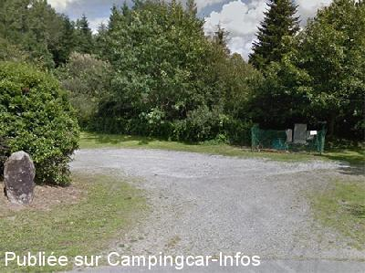

APN = Parking toléré jour/nuit de :
SAINT CONNAN
(N° 583)
Accès/adresse :
Hent Ar Stang
22480 SAINT CONNAN
22480 SAINT CONNAN
Latitude : (Nord) 48.41917° Décimaux ou 48° 25′ 9′′
Longitude : (Ouest) -3.06056° Décimaux ou -3° 3′ 38′′
Tarif : Gratuit
Services :
Autres informations :
Au bout de l'étang

Le 27/08/2015 par lelito
de
B. MOQUETTE
le 24/08/2000 :
Très joli cadre en bout de l'étang. Etape très calme pour passer la nuit.
Très joli cadre en bout de l'étang. Etape très calme pour passer la nuit.